En Oracle, un rol es un conjunto de privilegios. Es decir, podemos crear un rol para asignarle una serie de privilegios. Y, posteriormente, podemos asignarle a un usuario dicho rol. De esta manera, y de una manera mucho más eficiente, le estamos asignando varios privilegios a un o unos usuarios.
También dentro de un rol, yo puedo incluir otro rol.
Los roles permiten gestionar en forma dinámica los permisos otorgados. Si se modifica un rol, todos los usuarios asignados se modifican.
También, los roles se pueden activar y desactivar.
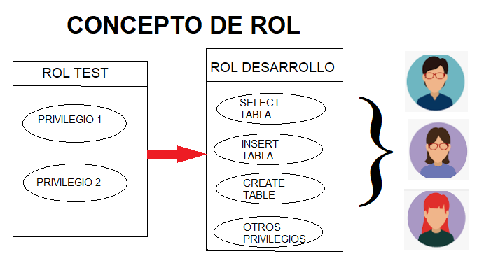
Fuente Propia
En la imagen anterior, podemos ver que al rol denominado Rol Desarrollo, le asigno 4 privilegios. Y luego dicho rol, se los asigno a 3 usuarios. Estos tres usuarios tendrían asignados los 4 privilegios. También se ve que se puede asignar otro rol (Rol Test) al Rol Desarrollo. De esta manera, el Rol Desarrollo ya tendrá 6 privilegios, los cuales son heredados por los usuarios asignados.
Roles Predefinidos en Oracle
Los roles que están predefinidos en Oracle, y que pueden ser utilizados como cualquier otro rol, se muestran en la tabla siguiente.
| ROL | DESCRIPCIÓN |
| CONNECT | CREATE SESSION |
| DBA | Todos los permisos de Administración |
| RESOURCE |
CREATE CLUSTER, CREATE INDEXTYPE, CREATE OPERATOR, CREATE PROCEDURE, CREATE SEQUENCE, CREATE TABLE, CREATE TRIGGER, CREATE TYPE |
| SCHEDULER_ADMIN |
CREATE ANY JOB, CREATE EXTERNAL JOB, CREATE JOB, EXECUTE ANY CLASS, EXECUTE ANY PROGRAM, MANAGE SCHEDULER |
| SELECT_CATALOG_ROLE | Consultar las tablas del diccionario de datos |
Vamos a mirar, de forma práctica, cómo se crean los roles.
La creación de un rol se hace con la instrucción CREATE ROLE, tal y como se ve en la imagen izquierda. Crear un rol es muy sencillo. Por otra parte, si queremos ver los metadatos de los roles, podemos consultar la vista DBA_ROLES. Podemos observar que ya está creado el rol DESARROLLO, el cual tiene el ID 123, asignado por Oracle, es un rol que para su manejo no requiere de password (PASSWORD_REQUIRED), y es un rol que no es mantenido o gestionado automáticamente por Oracle (ORACLE_MANTAINED), entro otros datos que son almacenados.
| 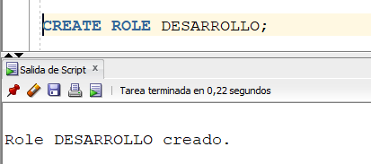 | 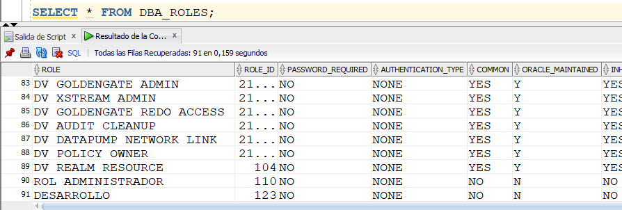 |
Cómo se otorgan y quitan privilegios a un rol?
La sintaxis para hacerlo es igual a si le otorgáramos un privilegio a un usuario. En la imagen de la izquierda, estamos otorgando al rol llamado DESARROLLO el privilegio de sistema SELECT ANY TABLE.
| 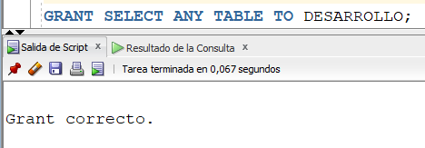 | 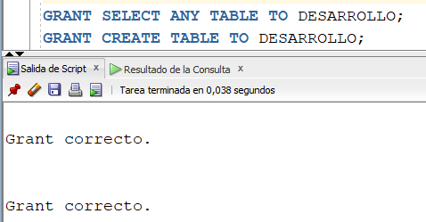 |
Si queremos mirar que privilegios de sistema se le han dado a un rol determinado, podemos consultar la vista DBA_SYS_PRIVS.
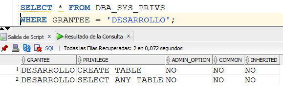
También podemos darle a un rol un privilegio de objeto, tal y como se ve a continuación. Al rol DESARROLLO de estamos dando permiso para hacer SELECT en la tabla VEHICULO del esquema EJEMPLO.
Y si queremos mirar los privilegios de objetos, como el del ejemplo mostrado, asignados a un rol, consultamos la vista DBA_TAB_PRIVS, como se ve en la imagen de la derecha.
| 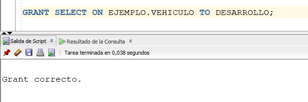 |  |
Para quitarle un privilegio a un rol, lo hacemos con el REVOKE, de la misma manera que se hace con usuarios. Luego de quitarle el privilegio de CREATE TABLE a dicho rol, vemos que en la vista DBA_SYS_PRIVS ya no existe.
| 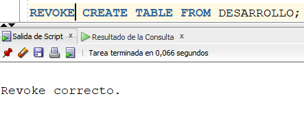 | 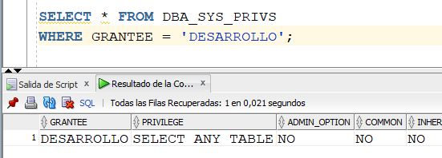 |
Cómo asignarle un rol a un usuario?
Para mostrar el proceso, el cual es muy sencillo, creamos un usuario llamado DESA1. Luego, a dicho usuario le asignamos dos roles: CONNECT (que es un rol predefinido) y DESARROLLO. De esta manera, el usuario DESA1 tendrá permiso de conectarse a la base de datos y, además, tendrá todos los permisos asociados al rol DESARROLLO.
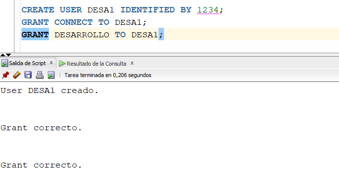
Ahora, vamos a crear una conexión con el usuario recién creado, DESA1. Y estando dentro de dicho usuario, hagamos la consulta a la vista SESSION_ROLES, al cual muestra con que roles asignados me he conectado, en este caso, CONNECT y DESARROLLO. Para el mismo fin, también se puede usar la vista USER_ROLE_PRIVS
| 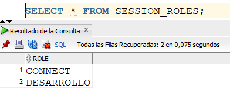 | 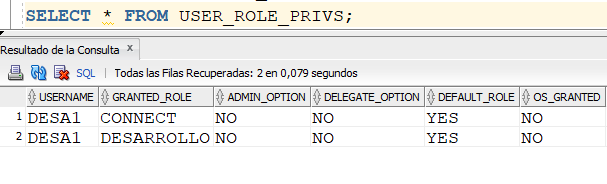 |
Otras vistas para consultar roles
La vista DBA_ROLES me permite mirar todos los roles que se tienen creados en la base de datos.
Otra vista interesante es la vista DBA_ROLE_PRIVS, la cual me dice a un usuario dado, qué roles se le han asignado. El primer ejemplo mostrado me dice qué roles tiene asignado el usuario DESA1. El segundo ejemplo me dice qué usuarios tienen asignado el rol DESARROLLO.
| 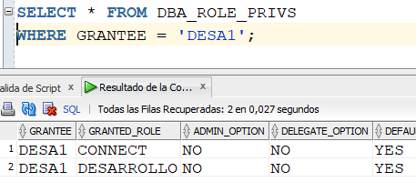 | 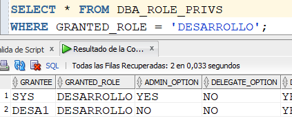 |
Por otro lado, si queremos mirar el usuario DESA1, qué privilegios de tabla ha heredado a partir de un rol, podemos consultar ROLE_TAB_PRIVS. Y si queremos mirar que privilegios de sistema tiene el usuario, y que hayan sido asignados por medio de un rol, consultamos ROLE_SYS_PRIVS.
| 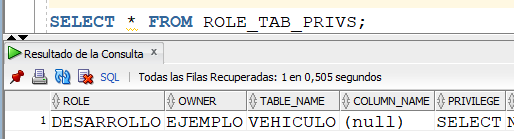 | 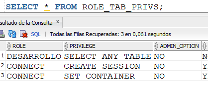 |
Cómo borrar un rol?
Se hace a través de DROP ROLE. Es importante señalar que cuando se borra un rol, automáticamente se le borran a todos los usuarios que lo tuvieran asignado. En el ejemplo, vemos que borramos en rol DESARROLLO y, automáticamente, al usuario DESA1 se le borra dicho rol.
| 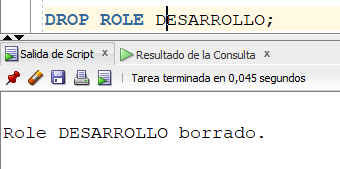 | 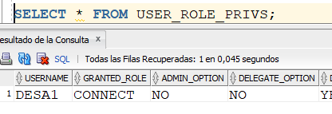 |
Videos: